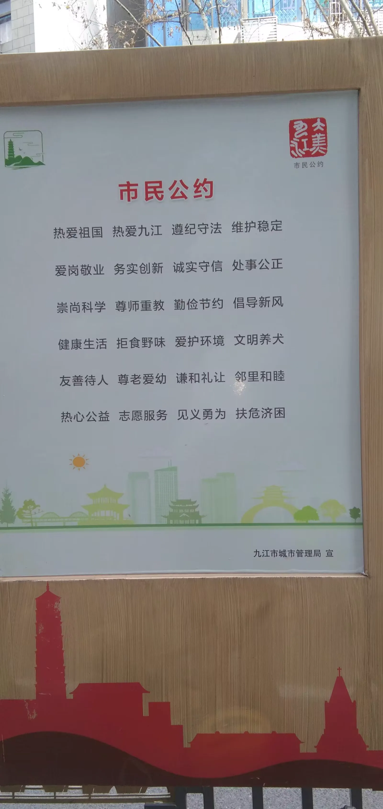
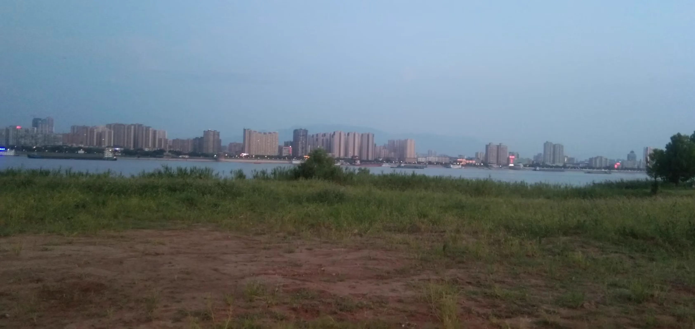

Journal · 2024-10-13
湖北省武汉市
编辑于2024年10月13日 15:03
从江城到江州，前往浔阳驿！


Edited on Oct 13, 2024 15:03
From the River City to Jiangzhou, onward to Xunyang Station!
Modifié le 13 oct. 2024 à 15:03
De la Cité des rivières à Jiangzhou, en route vers le relais de Xunyang !
Bearbeitet am 13.10.2024 um 15:03
Von der Flussstadt nach Jiangzhou, auf zum Posthaus von Xunyang!